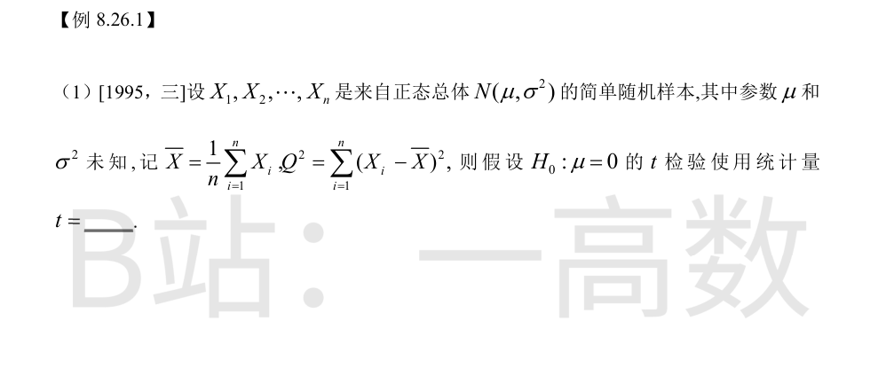
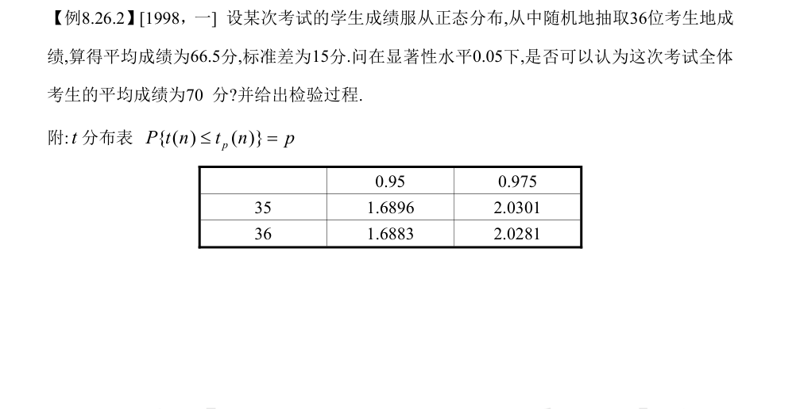
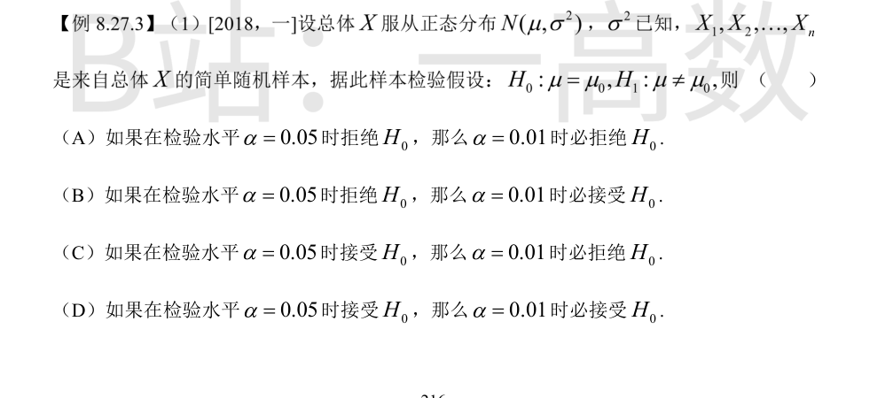
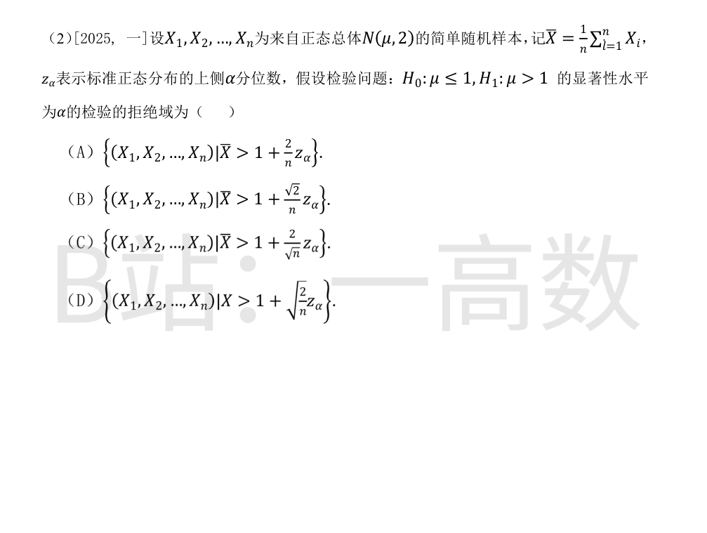
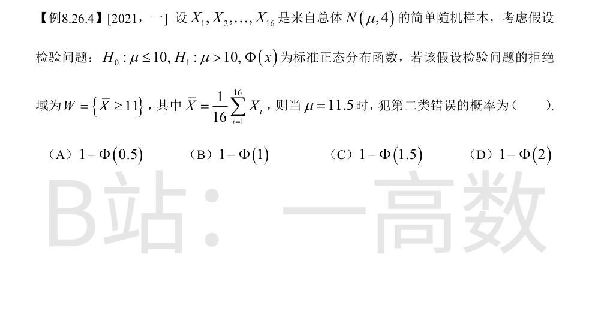

**思路**：σ² 未知，对 μ=0 用单样本 t 检验，统计量为 t = (X̄−μ₀)/(S/√n)，其中样本标准差 S 满足 S² = (1/(n−1))Σ(Xᵢ−X̄)² = Q²/(n−1)，即 S = Q/√(n−1)。
代入 μ₀ = 0：
$$t = \frac{\bar{X} - 0}{S/\sqrt{n}} = \frac{\bar{X}}{\dfrac{Q}{\sqrt{n-1}} \cdot \dfrac{1}{\sqrt{n}}} = \frac{\bar{X}\sqrt{n(n-1)}}{Q}.$$
故假设 H₀: μ=0 的 t 检验使用统计量 $t = \dfrac{\bar{X}\sqrt{n(n-1)}}{Q}$。

**建立假设**：$H_0: \mu = 70$，$H_1: \mu \neq 70$（双侧检验）。
**选统计量**：总体方差未知，取
$$t = \frac{\bar{X} - 70}{S/\sqrt{n}} \sim t(n-1), \quad n = 36, \ df = 35.$$
**计算实现值**：
$$t = \frac{66.5 - 70}{15/\sqrt{36}} = \frac{-3.5}{2.5} = -1.4.$$
**确定拒绝域**：α = 0.05，双侧检验查 $t_{0.975}(35) = 2.0301$，拒绝域为 $|t| > 2.0301$。
**判断**：$|t| = 1.4 < 2.0301$，未落入拒绝域，接受 $H_0$。
**结论**：在显著性水平 0.05 下可以认为这次考试全体考生的平均成绩为 70 分。


σ² 已知，用 Z 检验，统计量 $Z = \dfrac{\bar{X}-\mu_0}{\sigma/\sqrt{n}}$，水平 α 的拒绝域为
$$|Z| > z_{\alpha/2}.$$
α 越小，$z_{\alpha/2}$ 越大：$z_{0.005} > z_{0.025}$。故 α 从 0.05 减小到 0.01 时，拒绝域变小、接受域 $\{|Z| \le z_{\alpha/2}\}$ 变大，且 α=0.05 的接受域包含于 α=0.01 的接受域。
- (A) 0.05 时拒绝（$|Z| > z_{0.025}$）不能保证 $|Z| > z_{0.005}$（可能落在 $[z_{0.005}, z_{0.025})$ 内），故 α=0.01 时未必拒绝。错。
- (B) 0.05 时拒绝也可能 $|Z| > z_{0.005}$，即 α=0.01 时仍拒绝，未必接受。错。
- (C) 0.05 时接受即 $|Z| \le z_{0.025} < z_{0.005}$，α=0.01 时必接受，必不拒绝。错。
- (D) 0.05 时接受即 $|Z| \le z_{0.025} < z_{0.005}$，故 α=0.01 时必接受。对。
**选 (D)**。
总体 $N(\mu, 2)$，故 $\bar{X} \sim N\left(\mu, \dfrac{2}{n}\right)$。
对右侧检验 $H_0: \mu \le 1$ vs $H_1: \mu > 1$，取统计量
$$Z = \frac{\bar{X} - 1}{\sqrt{2/n}}.$$
当 μ = 1 时 Z ~ N(0,1)；当 μ < 1 时 P(拒绝) 更小，故犯第一类错误的概率在 μ=1 处取上确界，拒绝域 $Z > z_\alpha$ 给出水平 α 的检验。
$$P\left(\frac{\bar{X}-1}{\sqrt{2/n}} > z_\alpha\right) = \alpha \iff \bar{X} > 1 + \sqrt{\frac{2}{n}}\, z_\alpha.$$
即拒绝域为 $\left\{\bar{X} > 1 + \sqrt{\dfrac{2}{n}}\, z_\alpha\right\} = \left\{\bar{X} > 1 + \dfrac{\sqrt{2}}{\sqrt{n}} z_\alpha\right\}$。
对照选项：(A) $1+\frac{2}{n}z_\alpha$、(B) $1+\frac{\sqrt{2}}{n}z_\alpha$、(C) $1+\frac{2}{\sqrt{n}}z_\alpha$ 均不对，**选 (D)**。

**第二类错误** = H₁ 为真（μ=11.5）时接受了 H₀，即 $\bar{X} < 11$ 的概率。
$\bar{X} \sim N\left(\mu, \dfrac{4}{16}\right) = N(\mu, \dfrac{1}{4})$，标准差为 $\dfrac{\sigma}{\sqrt{n}} = \dfrac{2}{4} = 0.5$。
当 μ = 11.5 时：
$$\beta = P(\bar{X} < 11) = P\left(\frac{\bar{X} - 11.5}{0.5} < \frac{11 - 11.5}{0.5}\right) = P(Z < -1) = \Phi(-1) = 1 - \Phi(1).$$
**选 (B)**。